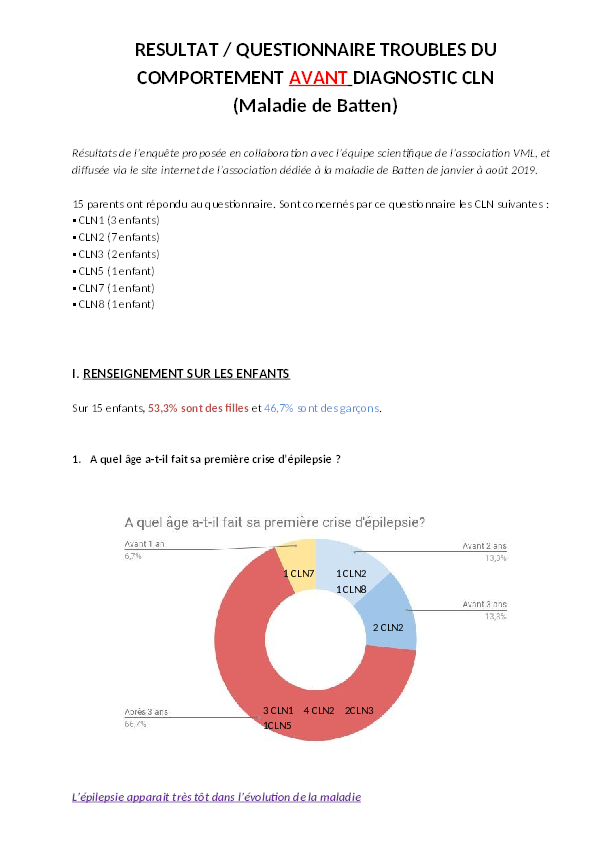

Troubles du comportement avant le diagnostic CLN
Le diagnostic des maladies de Batten, comme beaucoup de maladies rares, est un long parcours, d'autant plus douloureux à vivre par les familles que les symptomes progressent vite, et que l'accompagnement est un véritable défi pour l'entourage des enfants.
Valérie, maman de Mathis atteint de la CLN2, a vécu cette errance de diagnostic. Mathis présentait des troubles du comportement dès son plus jeune âge, lesquels ont été pris en compte très tardivement par le personnel médical et sont restés incompris par leur entourage, jusqu'au diagnostic. Sa maladie est apparue à l'âge de 2 ans et demi, et le diagnostic n'a été posé qu'à l'âge de 5 ans. On s'interroge cependant : ces mêmes troubles du comportement ne seraient-ils pas l'un des signe précurseur de la maladie ?
Valérie est soucieuse de partager avec les autres parents son vécu. Nous utilisons ensemble cette page pour regrouper les informations que nous récoltons sur les troubles du comportement, et pour diffuser le questionnaire réalisé par Valérie. N'hésitez pas à le diffuser dans votre entourage, pour consolider la compréhension de ces symptômes associé à la maladie de Batten.
Étude / questionnaire
En collaboration avec l'équipe scientifique de l'association VML, Valérie a proposé une enquête auprès des parents d'enfants atteints de la maladie de Batten afin de référencer les troubles du comportement (selon le type de CLN), et permettre ainsi de poser un diagnostic plus précocement et, ainsi, assurer une meilleure prise en charge des enfants, et aussi des parents accompagnants.
Cette étude peut également être un complément d'informations à un nouveau centre de référence « maladies rares à expression psychiatrique », laquelle cherche à sensibiliser les neurologues et les psychiatres, et réfléchir à une démarche de diagnostic incluant les troubles du comportement et les signes organiques. Ce sujet commence à être évoqué seulement depuis 2016 par les spécialistes des maladies rares lors de journées informatives. Il faut persévérer !
Nous avons solicité votre participation pour contribuer à cette évolution.
Pour répondre au questionnaire, vous pouvez le remplir directement en ligne, ou télécharger (au format pdf ou au format docx), le remplir, puis le retourner par courriel à l'adresse cln@vml-asso.org.
En août 2019, une première synthèse des réponses à ce questionnaire a été réalisée, que nous publions ici : résultat du questionnaire troubles du comportement avant le diagnostic CLN (Maladie de Batten).
Les résultats de cette étude seront mis à jour sur cette page lorsque le nombre de réponses complémentaires sera suffisant. N'hésitez pas à nous écrire pour toute remarque ou complément d'information.
Témoignage d'une maman américaine
On lit sur internet d'autres témoignages semblables à celui de Valérie. Dans la vidéo ci-dessous, Marlo (une maman américaine) raconte comment son fils porteur de la maladie de Batten a été mal diagnostiqué.
Études scientifiques
Plusieurs études scientifiques font état de troubles du comportement chez les patients atteints de la maladie de Batten. La langue utilisée par les publications scientifiques étant en anglais, nous proposons ici un résumé très court de chacun des articles. On peut aussi utiliser les sites de traduction automatique type DeepL, en faisant un copier/coller pour avoir une traduction approximative mais compréhensible de ces articles.
-
Dans une publication datant de 2006, les auteurs ont réalisé une étude auprès d'une vingtaine de patients. Ils montrent que les patients ont
des symptomes assez hétérogènes, certains souffrant de troubles du comportement, quant d'autres ne sont pas touchés. L'étude s'appuie sur une échelle qui détaille plus précisément ces troubles : anxiété, dépression, sociaux, compréhension, attention, respect des règles, agressivité.
ADAMS, Heather, DE BLIECK, Elisabeth A., MINK, Jonathan W., et al. Standardized assessment of behavior and adaptive living skills in juvenile neuronal ceroid lipofuscinosis. Developmental medicine and child neurology, 2006, vol. 48, no 4, p. 259-264. -
Dans une publication de 2010, les auteurs prouvent que le génotype de permet pas de prédire la sévérité des troubles du comportement chez les porteurs de la maladie de Batten.
ADAMS, Heather R., BECK, Christopher A., LEVY, Erika, et al. Genotype does not predict severity of behavioural phenotype in juvenile neuronal ceroid lipofuscinosis (Batten disease). Developmental Medicine & Child Neurology, 2010, vol. 52, no 7, p. 637-643. -
Dans une publication datant de 2013, les auteurs ont état de plusieurs études (notamment finlandaises) rapportant les troubles du comportement chez
les patients atteints de la maladie de Batten.
ADAMS, Heather R., MINK, Jonathan W., et UNIVERSITY OF ROCHESTER BATTEN CENTER STUDY GROUP. Neurobehavioral features and natural history of juvenile neuronal ceroid lipofuscinosis (Batten disease). Journal of child neurology, 2013, vol. 28, no 9, p. 1128-1136.